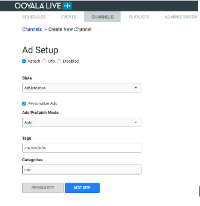
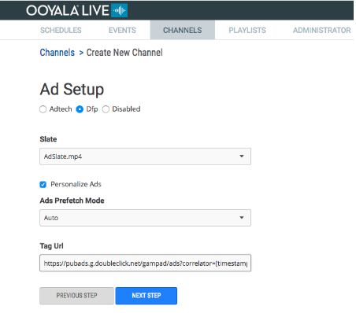
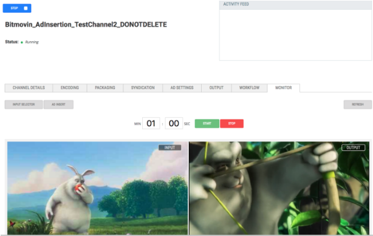

This document describes how to integrate SSAI with the Ooyala Live stream. For
information on using SSAI for VOD assets, please see here. For an end-to-end guide to SSAI, please see here.
Unsupported Formats with SSAI
We do not currently support the following with SSAI Live or VOD:
- Streams with multi-audio tracks (only single-audio track streams are
supported).
- HEVC codec.
- DASH, Smooth output streams.
Processing Profile for Ads in Live SSAI
For Live SSAI, ads are downloaded and transcoded as per each Live channel
profile.
Step By Step Guide:
This is a walkthrough of setting up an SSAI channel, and how to use the SSAI feature to insert ads in stream.
Ooyala Live Stream Integration with SSAI
Integrate DFP or Ooyala Pulse with Ooyala live for seamless server-side ad insertion
(SSAI).
Ooyala Live offers integration with Google’s DFP and
Ooyala Pulse to enable SSAI. Your Ooyala representative will onboard your Pulse
account and integrate it with your Live account, which will have exclusive
access to theAd server account. Your ads will be automatically downloaded and
transcoded.
Note: This capability supports only HTTP Live Streaming (HLS ).
Therefore, when you create your channel, use an HLS output template.
With Personalized SSAI, the ad server customizes the ads it displays to each
individual user. Different users might get the same set of ads in the same order,
but the decisions are still made individually for each user.
When you create a channel for a personalized ad (personalized for users), you must create
a publishing rule called SSAI in your Backlot account (see Creating Publishing Rules).
Note: You should use Ooyala Player V4, which supports playback in HLS. Ooyala Player V3 does
not support HLS on the web.
Note: Before you create a channel, make sure at least one ad slate has been added to the
Live account:
- Click on 'Slates' in Live. It is located near the top right of the Live
app.
- If no slates have the Ad Slate field checked, add an
ad slate, which must be an MP4 video at least 5 seconds long, and cannot be
an image.
To integrate Pulse ads in your live stream, follow these steps in the Ooyala Live UI:
- In General Setup, select Ooyala
Package and Ooyala Encode and click
Next Step.
- Create a channel - go to Channels, click Add Channel and go through the
following steps to create an HLS channel:
- Select the Encoding Setup according to your
profile and click Next Step.
- In , select any compliant output package. For example, if
you select HLS_Only, your Output
Type will be hls. Click
Next Step.
Note: Details of non-compliant
output packages are also listed. However, if you select a
non-compliant output package, you will not be able to click the
ad Enabled check box in the next
step.
While going through the channel creation process, if
you are on-boarded with at least one ad provider, an Ad Setup page
will be displayed. If you cannot choose your ad provider, it may be
due to an incompatible elemental-live encoding output profile. If
this is the case, you should see list of detected issues on the
screen. You will either need to choose a compatible profile or
correct the current one before you proceed.
- On the Ad Setup screen, click
Enabled and click Next
Step.
- If you want to create an SSAI channel with the 'Adtech' ad provider, i.e. Pulse,
as the ad-server, select Adtech. The following is
displayed:

- The Slate field contains the desired ad slate to use with the
channel. The ad slate is used to fill ad breaks when an ad is
not available to be inserted.
- Check Personalize Ads for each user to get their
own list of ads. When unchecked, the SSAI server will retrieve
one set of ads to be used by all users on the SSAI server.
- Ads Prefetch Mode has 3 options: Auto,
ON, and OFF.
Prefetch mode is used to prefetch modes in advance of an ad break
and is useful during very large events. Auto mode is a good default
option. With this option, SSAI will automatically turn pre-fetch
mode on when it deems necessary.
- The Tags field is specific to AdTech(Pulse) and can be used to
aid in targeting of ads.
- The Categories field is specific to AdTech(Pulse) and can be
used to aid in targeting of ads.
- If you want to create an SSAI channel with the 'Dfp' ad provider, select
Dfp. The following is displayed: 
- Select a Slate that will ensure the entire ad break is filled. The
slate field contains the desired ad slate to use with the channel.
The ad slate is used to fill ad breaks when an ad is not available
to be inserted.
- Check Personalize Ads for each user to get their own list of ads.
When unchecked, the SSAI server will retrieve one set of ads to be
used by all users on the SSAI server.
- Ads Prefetch Mode has 3 options: Auto, ON, and OFF. Prefetch mode is
used to prefetch modes in advance of an ad break and is useful
during very large events. Auto mode is a good default option. With
this option, SSAI will automatically turn pre-fetch mode on when it
deems necessary.
- The Tag Url field is specific to DFP and
is used by SSAI to retrieve ads from DFP:
- The customer's DFP account must be whitelisted for SSAI. The
customer must contact DFP to request approval. If the
customer is not whitelisted and just wants to test the
functionality, the tag url must include &ss_req=0 at the
end of the query string. With this setting, however,
impression counts and geo targeting will not function
correctly.
- This call should return VAST. Information on how to create
this tag manually can be found here. In addition,
DFP has tools to help create this tag.
- The url can contain the following macros that SSAI will
resolve when making ad calls:
- [timestamp]
- [referrer_url]
- [random]
- [cache_buster]
- Testing
- After you create and start the channel, to test it, view its details
and click on the Monitor tab.
- Click Ad Insert to display ad break duration fields
and start/stop buttons:
Enter the desired ad break duration and click START to insert the
ad break. The player on the left, which shows the encoder
output, should display a black screen during the ad break. The
player on the right displays the inserted ads and/or ad slate.
- You will be provided with a standalone ad test page with the Ooyala Player Token
enabled: this test page allows you to view the ads that a user would see
during an ad break. On that test page, click Optional
and specify a tag to be used for personalized ads. For each tag you specify,
you will see a unique personalized ad associated with that tag.
To insert third-party ads mid-roll into a Live stream, first use Pulse to add a
third-party ad for a campaign goal. Then, create an SSAI channel for the Pulse campaign
that has the third-party ad.
- In Pulse, add a third-party ad for a campaign goal:
- In the Add a new ad for goal dialog, click the
tab.
- In the 3rd Party Ad URL (VAST) field, enter the
URL of the ad’s VAST file. To test, you can use http://aptest.adtech-union.tv/proxy/distributor/v2?rt=vast_3.0&t=midroll2.
- Click Save.
- Wait from 5 to 10 minutes for the changes to take effect.
- Insert the third-party ad into an Ooyala Live stream:
- In Ooyala Live, create an SSAI channel for the Pulse campaign that
has the third-party ad.
- Insert an ad break.
- Start the SSAI channel, play some of the ads, verify the slate that
was played, and stop the channel.
Note: The first time a specific third-party ad is encountered; it does not play because
it has not been transcoded. Instead, it is submitted for transcoding. After transcoding,
when it the third-party ad is encountered, it plays.
To change an ad slate for an SSAI channel:
- In Live, if only one ad slate exists, upload a new ad slate.
- Wait up to 10 minutes for the ad to be transcoded.
- View the status of the new ad slate.
- In Live, click View channel details.
- Click Ad Settings.
- Change the Ad Slate parameter to the new ad slate.
- Start the channel, insert an ad break, and verify that the new ad slate has been
played.
Live Ad Insertion API Call
You can insert the ad segments through a button on the UI or through API calls.
The following example shows the details of the API call to be made to insert the ad
markers in the stream, which determines where the ad segments will be inserted.
METHOD: POST
URL: https://live.ooyala.com/v2/channels/<channel_id>/insertAdMarkers
BODY: {"duration":60000,"delay":0}
Note:
- duration should be no less than 1000.
- 60000 is equal to 60 seconds.
- The delay is in milliseconds.